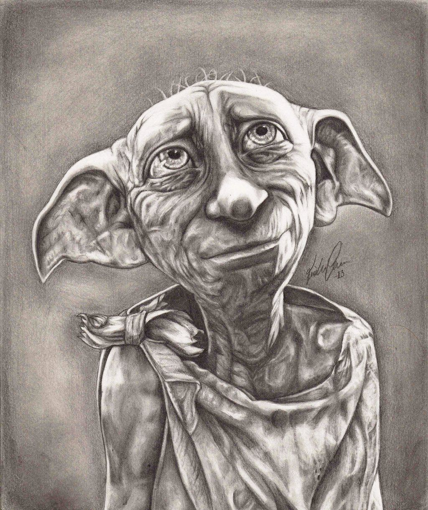

DOBBY

This is our adorable Dobby
- Dobby (28 June (year unknown) – March, 1998) was a male house-elf who served the Malfoy family. His masters were Dark Wizards who treated him cruelly.
- In 1992 he disobeyed his masters and tried to warn Harry Potter of the plot to have the Chamber of Secrets reopened. He came to know this via the contact between his masters and Lord Voldemort.
- At the end of that school year, after Harry had vanquished the memory of Tom Riddle and slayed the basilisk in the Chamber of Secrets, he tricked Lucius Malfoy into freeing Dobby. Harry accomplished this by placing T. M. Riddle's Diary inside his own sock.
- Lucius disgustedly ripped the sock off the book and threw the sock into the air, where Dobby caught it.
- Dobby's pride of being a free elf, and his loyalty towards Harry Potter.Dobby suffered a period of unemployment, during which he was often ostracised for having no "proper shame" in regards to being out of work.
- He was generally pleased to be free, although he did enjoy working as a hobby. Dobby was ecstatic to be out of the abusive hands of the Malfoys, but equally pleased to join the Hogwarts staff.
- At Hogwarts he could come and go as he liked, did not have many tasks, and those he did have were fairly simple. Dobby requested some compensations for his work and eventually he and Dumbledore came to an agreement.
- He had been accompanied to Hogwarts by his friend Winky (who had recently been dismissed) and so began Dobby's new happy life nearby his closest friends: Harry, Ron, and Hermione.
- In 1997 Dobby helped Harry spy on Draco Malfoy along with Kreacher.
- In 1998 he went on Aberforth Dumbledore's orders to save the lives of Harry and his companions from Death Eaters at Malfoy Manor.During this rescue he was fatally wounded by Bellatrix Lestrange's knife, but successfully apparated Harry and Griphook to safety at Shell Cottage.
- Harry dug Dobby's grave without magic, in the gardens of Shell Cottage and carved into the headstone of the grave "HERE LIES DOBBY, A FREE ELF."
"Dobby has no master! Dobby is a free elf, and Dobby has come to save Harry Potter and his friends!"